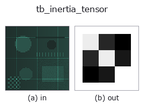

typed op• 資料種類:points → matrix
• 呼叫:fullseye.apply(img, "tb_inertia_tensor", a=0.5, b=0.5)(2-D 的模型是一張圖 + 兩個純量旋鈕 a,b∈[0,1])

*圖為在 128×128 合成輸入上實際執行的輸出。左為輸入，右為輸出。點雲以俯視散點顯示(亮度 = z)，一維序列為折線，體資料為沿 z 的最大值投影，影片為中間影格，複數影像為振幅；無法成像的回傳值直接顯示數值。*
*旋鈕 a 不改變輸出(實測: 0.1 / 0.5 / 0.9 相同)。*
*旋鈕 b 不改變輸出(實測: 0.1 / 0.5 / 0.9 相同)。*
階段(前置運算子 → 本運算子，由左至右):
▸ tb_inertia_tensor: 處理階段 (文件網站)
換別的影像(合成場景 / 照片 / 硬幣。上排為輸入，下排為對應輸出。旋鈕取預設):
▸ tb_inertia_tensor: 其他輸入影像 (文件網站)
點雲的慣性張量 (3,3)（由中心二階矩計算，假設質量相等、總質量為 1）。
I_xx = mean(y²+z²), I_yy = mean(x²+z²), I_zz = mean(x²+y²), I_xy = -mean(xy), I_xz = -mean(xz), I_yz = -mean(yz)。用共變異數 C 表示等價於 I = tr(C)·E₃ − C(E₃ 為單位矩陣)。對稱、半正定。由於以質心為中心,具有平移不變性。
np.ndarray, shape (3, 3)
對稱的慣性張量。
補充:
• 單位為長度²(視為質量 1 的等質量點,因此不含密度)。旋轉點雲時映射為 R I Rᵀ,特徵值(principal_moments)是旋轉不變量,特徵向量是主軸(moment_axes)。
• 輸入為 (N,3),N >= 1(1 點時為零矩陣)。形狀不正確、非有限時 ValueError。
• 與共變異數 C 的關係為 I = tr(C)·E₃ - C,C 與 I 的特徵向量相同,特徵值為 tr(C) - c_i。
• 這不是實體(體積)的矩,而是 樣本點 的矩,因此即使形狀相同,點密度不均時值也會改變。要均勻化密度,在前級用 voxel_grid_downsample。確定性。
橋接到 2-D 演化登錄表的 3d op inertia_tensor。實作相同,只有呼叫慣例改為 op(v, a, b)。此 op 沒有可調點,a 與 b 都不使用。
• 範例資料目錄(下載 URL / 授權) —— 2-D 用 skimage.data(BSD/公有領域)加合成圖,3-D 給出真實資料源(Stanford/PDS 等)的下載 URL。
• 運算子來歷與參考文獻 —— 該運算子族所依據的研究/方法出處。
下面的程式已確認可以執行(與圖相同的輸入)。在 Studio 說明中，此區塊會變成按鈕，可當場載入並執行。
img_to_points 0.50 0.50 tb_inertia_tensor 0.50 0.50
下面的範例呼叫的是底層帳本運算子 inertia_tensor。此橋接運算子只是把同一實作適配為 fn(v, a, b) 慣例，行為完全相同(只是呼叫形式不同)。
• moment_invariants — py -3.11 examples_3d/moment_invariants.py
matrix 作為輸入)identity · tb_mat_pinv · tb_mat_cond · tb_stat_covariance · tb_stat_correlation · tb_intrinsics_to_fullseye · tb_intrinsics_to_carla · matrix_to_img
typed)tb_points_to_voxel · tb_estimate_point_normals · tb_iss_keypoints · tb_project_points · tb_render_point_depth · tb_statistical_outlier_removal · tb_radius_outlier_removal · tb_voxel_grid_downsample
*Provenance: ops.py — 2D 運算子登記表。本條目由 tools/opdocs.py md 自動產生(請勿手動編輯)。*
© 2026 Kazufumi Furuse — Fullseye operator documentation. Licensed under Apache-2.0.